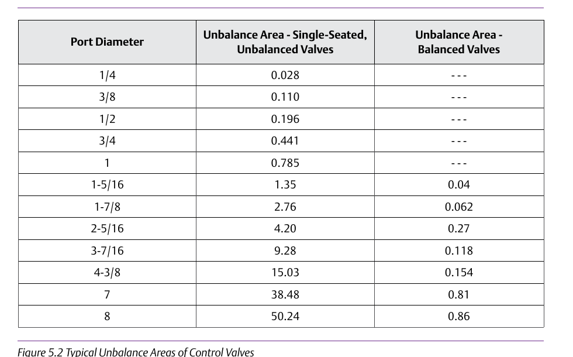
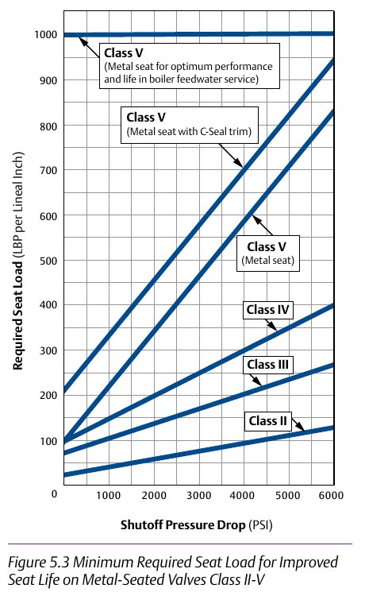

A correctly sized Cv is necessary but not sufficient


A correctly sized Cv is necessary but not sufficient — the actuator must generate enough force to seat against the resulting seat load, overcome packing friction, and account for unbalance area, or the valve won't fully close regardless of how well the Cv math worked out. Component Index: cvh-cmp-unbalance-area-table, cvh-cmp-seat-load-graph.